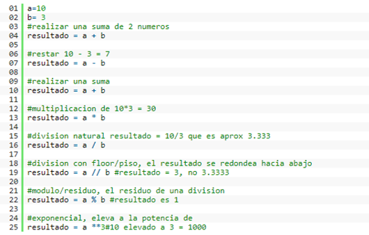

TAREA 4
TAREA 4
PYTHON
SIMBOLOS Y SINTAXIS
Operadores aritméticos
Los operadores aritméticos son los mas sencillos de todos, se utilizan para realizar operaciones aritméticas básicas, es decir sumas, restas, multiplicación división, modulo/residual, y exponenciales. En el siguiente ejemplo vemos el uso de cada operador con una descripción.
Operadores de comparación
Los operadores de comparación se usan para evaluar expresiones que solo pueden tener 2 resultados, estos resultados son verdadero o falso (true o false) y son los siguientes.
- == , evalúa como verdadero si 2 variables son iguales
- != ,evalúa como verdadero si 2 variables son diferentes
- <> , lo mismo que !=
- > , verdadero si el operador a la izquierda es mayor que el de la derecha
- < , verdadero si el operador a la izquierda es menor que el de la derecha
- >= verdadero si el operador a la izquierda es mayor o igual al de la derecha
- <= verdadero si el operador a la izquierda es menor o igual al de la derecha
Operadores de Asignación
Los operadores de asignación se utilizan para basicamente asignar un valor a una variable, así como cuando utilizamos el “=”.
Los operadores de asignación son “=,+=,-=,*=,/=,**=,//=”, a continuación algunos ejemplos.
- = , igual a, es el mas simple de todos y asigna a la variable del lado izquierdo cualquier variable o resultado del lado derecho.
- += , suma a la variable del lado izquierdo el valor del lado derecho.
ej. si “a” es igual a 5 y a+=10, entonces “a” sera igual a 15 - -= , resta a la variable del lado izquierdo el valor del lado derecho.
ej. si “a” es igual a 5 y a-=10, entonces “a” sera igual a -5 - *=, multiplica a la variable del lado izquierdo el valor del lado derecho.
ej. si “a” es igual a 5 y a*=10, entonces “a” sera igual a 50
DETALLES
Editores:
- Pydev
Es el IDE de Python por excelencia, simplemente porque es gratuito y trae consigo multitud de funciones muy interesantes para la programación eficiente de Python. Es un plugin open source que se ejecuta en Eclipse. Las principales características que hacen de Pydev una apuesta segura es la depuración integrada de Django, el autocompletado de código, soporte multilingüe, depuración integrada de Python , análisis de código, plantillas de código, marcado de errores o la integración de control de código.
- PyCharm
JetBrains es la compañía que está detrás de PyCharm, un IDE muy completo para Python. JetBrains ha estado haciendo herramientas de desarrollo de gran calidad durante los últimos años con el objetivo de hacer el trabajo más fácil y agradable. PyCharm es IDE profesional y tiene dos versiones: la open source, más básica, y la profesional . La popularidad de PyCharm se puede medir a partir del hecho de que las grandes empresas como Twitter, Groupon, Spotify, Ebay o Telefónica la utilizan hoy en día PyCharm. La mayoría de las características están disponibles en la versión gratuita, incluyendo el autocompletado de código, la navegación intuitiva por el proyecto, calidad de código verificado y refactorizado con PEP8 o depurador gráfico . Sin embargo, otras características más avanzadas como capacidades de desarrollo remoto, soporte de base de datos, soporte de frameworks de desarrollo web, etc., solo están disponibles en la edición profesional de PyCharm. Como aspecto a tener en cuenta destaca por su compatibilidad con múltiples frameworks de desarrollo de terceros como Django, Pyramid o el motor de Google.
- VIM
VIM es uno de los editores de texto más avanzados y es muy popular entre la comunidad de desarrolladores de Python. Es open source y está disponible bajo licencia GPL. A pesar de ser conocido generalmente como editor, VIM ofrece un entorno de desarrollo completo cuando está configurado correctamente para el desarrollo de Python. VIM es ligero, modular y rápido y es el más adecuado para programadores que prefieren trabajar solo con el teclado, sin utilizar el ratón durante la escritura del código. La configuración inicial puede ser costosa, ya que necesita utilizar varios complementos de VIM para que funcione de la mejor manera, pero el resultado final merece la pena.
- SpyderPython
Spyder Python es el IDE open source para Python más adecuado para su desarrollo científico. Es un software ligero, escrito en Python y disponible de forma gratuita bajo licencia del MIT. Algunas de las características básicas de Spyder Python son su editor de varios lenguajes, la consola interactiva, el visor de documentación, el explorador de variables, el explorador de archivos , etc. Spyder IDE tiene versiones para Windows, Mac o Linux. Además de todo ello, puede ser utilizado como una biblioteca de extensión PyQt y puede ser incorporado en aplicaciones PyQt.
Podríamos hablar de otros IDE’s con otras características también muy interesantes, pero hemos decidido destacar estos. Si les interesa conocer otros editores además de los citados, les invitamos a que exploren sobre Komodo, PTVS, Eric Python, Sublime Text 3 o Emacs , entre otros.
PARADIGMA
Multiparadigma
PROGRAMA
# MULTIPLOS DE 3 Y 5
def multiple(valor, multiple):
"""
Funcion para calcular si el numero es multiplo
utilizando el modulo de la division
"""
resto = valor % multiple
if resto == 0:
return True
else:
return False
# lista que contendra los valores multiples
multiples_3=[]
multiples_5=[]
# bucle del 1 al 100
for i in range(1,101):
if multiple(i,3):
multiples_3.append(i)
if multiple(i,5):
multiples_5.append(i)
print "Los multiples de 3 son:", multiples_3
print ""
print "Los multiples de 5 son:", multiples_5